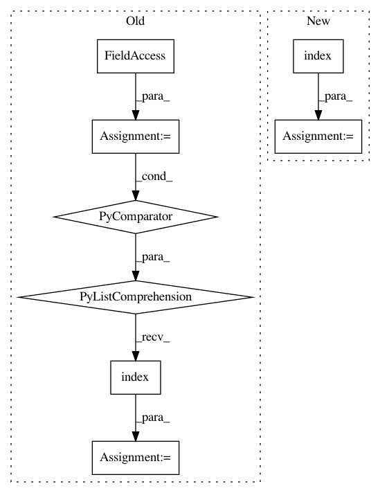

3e12d49324793d4798ee10bb6ef6a1c1b7633baf,python/caffe/pycaffe.py,,_Net_backward,#Any#Any#Any#Any#,85
Before Change
diffs = []
if start is not None:
start_ind = [lr.name for lr in self.layers].index(start)
else:
start_ind = len(self.layers) - 1
if end is not None:
After Change
diffs = []
if start is not None:
start_ind = list(self._layer_names).index(start)
else:
start_ind = len(self.layers) - 1
if end is not None:
In pattern: SUPERPATTERN
Frequency: 3
Non-data size: 8
Instances
Project Name: BVLC/caffe
Commit Name: 3e12d49324793d4798ee10bb6ef6a1c1b7633baf
Time: 2014-09-01
Author: jonlong@cs.berkeley.edu
File Name: python/caffe/pycaffe.py
Class Name:
Method Name: _Net_backward
Project Name: BVLC/caffe
Commit Name: 3e12d49324793d4798ee10bb6ef6a1c1b7633baf
Time: 2014-09-01
Author: jonlong@cs.berkeley.edu
File Name: python/caffe/pycaffe.py
Class Name:
Method Name: _Net_forward
Project Name: chainer/chainercv
Commit Name: 37041f9f9417da4bd3a0d7769b6a34f3e2ad83be
Time: 2018-04-17
Author: Hakuyume@users.noreply.github.com
File Name: chainercv/chainer_experimental/datasets/sliceable/getter_dataset.py
Class Name: GetterDataset
Method Name: keys